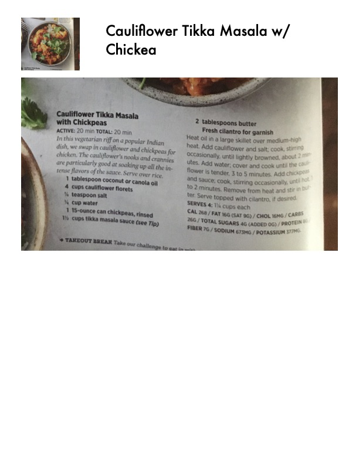

Cauliflower Tikka Masala with Chickpeas

Original cookbook page 66
A vegetarian riff on a popular Indian dish, swapping cauliflower and chickpeas for chicken. Serve over rice for a complete meal.
Ingredients
- 1 tablespoon coconut or canola oil
- 4 cups cauliflower florets
- ½ teaspoon salt
- ¼ cup water
- 1 15-ounce can chickpeas, rinsed
- 1½ cups tikka masala sauce
- 2 tablespoons butter
- Fresh cilantro for garnish
Instructions
- Heat oil in a large skillet over medium-high heat.
- Add cauliflower and salt; cook, stirring occasionally, until lightly browned, about 3 minutes.
- Add water and cover; cook until tender, 3 to 5 minutes.
- Add chickpeas and tikka masala sauce; cook, stirring, until hot, about 2 minutes.
- Remove from heat and stir in butter.
- Serve topped with cilantro if desired.
Recipe #66 from collection